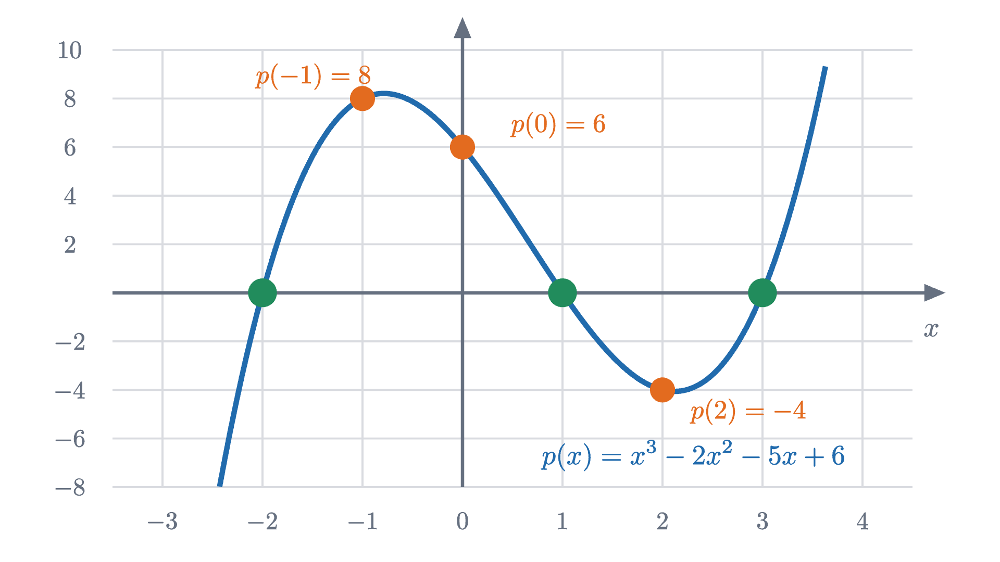
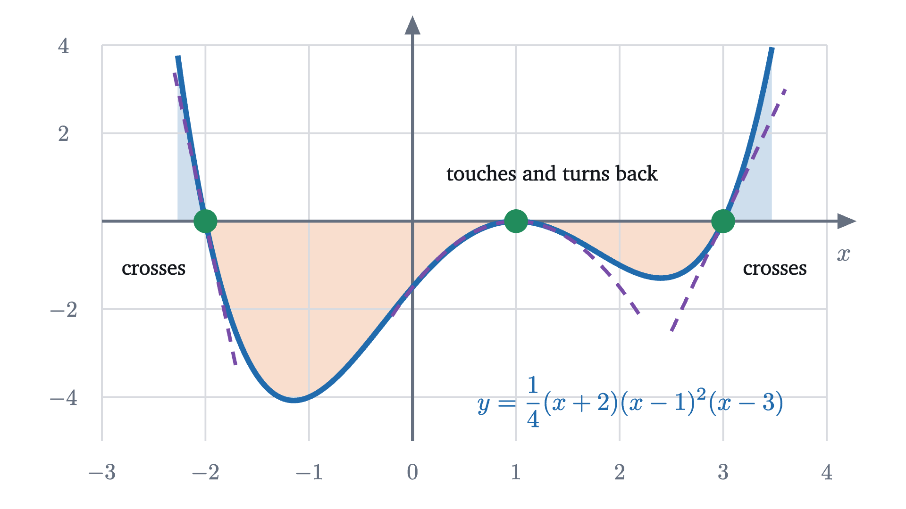

Roots, factors and the shape of a polynomial
A cubic crosses the x axis once or three times, never exactly twice. The factor theorem, multiplicity and the leading term explain why, with proofs.
AssumesThe distributive law as a picture: FOIL and (a+b)²Shifting and stretching graphs: why f(x - 2) moves right
Draw the graph of a cubic, any cubic, and count how many times it crosses the $x$ axis. You will get one or three. Slide the graph up and down, as in the animation, and the count changes from one to three by passing through a moment when the curve touches the axis without crossing it. A count of exactly two clean crossings never appears. Parabolas have their own rule: zero or two.
Nothing about the look of the formula $x^3 - 3x + c$ announces this. The explanation has three parts, and each is a theorem about polynomials in general: a root of a polynomial is the same thing as a factor of it; the far ends of the graph are decided by one term; and whether the graph crosses or touches at a root is decided by how many times the factor occurs. We will prove all three.
A polynomial and its roots
On the graph, the real roots are the places where the curve meets the $x$ axis. Our running example is the cubic

Finding the roots $-2$, 1 and 3 took nothing more than trying whole numbers. The interesting question is what a root tells us about the formula. The same thing happens with whole numbers: 7 goes into 91 exactly, and knowing that lets us write $91 = 7 \times 13$. To see whether a root does something similar we divide $p(x)$ by an expression of the form $x - a$, and it is instructive to begin with an $a$ that is not a root, $a = 2$.
Dividing polynomials works like long division of numbers: at each stage, match the leading term of what is left.
The result is $p(x) = (x - 2)(x^2 - 5) - 4$: a quotient $x^2 - 5$ and a remainder $-4$, which is a constant. And the remainder $-4$ is the number we met in the graph as $p(2)$.
Pause and try
Divide $p(x) = x^3 - 2x^2 - 5x + 6$ by $x - 1$ in the same way. What are the quotient and the remainder? Then predict, without dividing, the remainder when $p(x)$ is divided by $x + 1$.
Show answerHide answer
First $x^2(x - 1) = x^3 - x^2$, leaving $-x^2 - 5x + 6$. Then $-x(x - 1) = -x^2 + x$, leaving $-6x + 6$. Then $-6(x - 1) = -6x + 6$, leaving 0. So $p(x) = (x - 1)(x^2 - x - 6)$, with remainder 0. For the prediction, note that $x + 1 = x - (-1)$. If the pattern holds, the remainder is $p(-1) = 8$, and it is: $p(x) = (x + 1)(x^2 - 3x - 2) + 8$.
Here $a$ slides along the axis while the division is redone at every position.
Why the remainder is p(a): the factor theorem
The last step of the division figure already contains the reason. If $p(x) = (x - a)\,q(x) + r$ with $r$ a constant, then putting $x = a$ makes the first part vanish and leaves $p(a) = r$. What still needs proof is that such a quotient $q$ and constant $r$ always exist. Long division produces them in every example, but “it always works” is a claim about all polynomials, and there is a short argument that covers them all at once. It rests on one identity.
For every whole number $k \ge 1$,
To check it, multiply the long bracket by $x$ and by $a$ separately. Multiplying by $x$ gives $x^k + a\,x^{k-1} + \cdots + a^{k-1}x$. Multiplying by $a$ gives $a\,x^{k-1} + \cdots + a^{k-1}x + a^k$. Subtracting, every term cancels except $x^k$ and $a^k$. (This is the finite sum formula of the lesson on geometric series in other clothes. For $k = 2$ it is $x^2 - a^2 = (x - a)(x + a)$.)
Check the proof against the example with $a = 2$: $p(x) - p(2) = (x^3 - 8) - 2(x^2 - 4) - 5(x - 2) = (x - 2)\left[(x^2 + 2x + 4) - 2(x + 2) - 5\right] = (x - 2)(x^2 - 5)$, the quotient that long division found. The proof used only addition and multiplication, so it holds equally when the coefficients and $a$ are complex numbers.
How many roots can there be?
Apply the factor theorem to our cubic. Since $p(1) = 0$, we get $p(x) = (x - 1)(x^2 - x - 6)$, as you found by dividing. The quotient has roots of its own: $x^2 - x - 6$ vanishes at $x = -2$, so it equals $(x + 2)(x - 3)$. Altogether
Each root has been turned into a factor, and each factor has used up one unit of degree.
The hypothesis hidden in the word “degree” matters. The zero polynomial, all of whose coefficients are 0, has no degree, and every number is a root of it.
So a cubic has at most three roots and a quadratic at most two. It is tempting to go further and say a polynomial of degree $n$ has exactly $n$ roots. That is false for real roots: $x^2 + 1$ has none, and the cubic $x^3 - 3x + 4$ at the start of the hero animation has one. The missing roots exist, but they are complex numbers. This is the fundamental theorem of algebra: every polynomial of degree at least 1, with real or complex coefficients, has at least one complex root. It was proved in the early nineteenth century (Gauss and Argand gave the first proofs that were widely accepted), every known proof uses some fact about continuity or the real numbers that goes beyond algebra, and we cite it without proof. Combined with the factor theorem, used once per root as in the figure above, it implies that a polynomial of degree $n$ factors completely as $c\,(x - z_1)(x - z_2)\cdots(x - z_n)$ with complex $z_1, \ldots, z_n$, some of which may be equal.
Crossing or touching: multiplicity
At $c = 2$ the hero cubic is $x^3 - 3x + 2$, which factors as $(x - 1)^2(x + 2)$. The factor $x - 1$ occurs twice, and $x = 1$ is where the graph touches the axis and turns back.
Every root of a polynomial of degree $n$ has a multiplicity between 1 and $n$. Divide by $x - a$ for as long as the quotient still vanishes at $a$; each division lowers the degree by one, so this stops after at most $n$ divisions, at a quotient $q$ with $q(a) \ne 0$.
Pause and try
Let $h(x) = \frac14(x + 2)(x - 1)^2(x - 3)$. Work out the sign of each of the factors $x + 2$, $(x - 1)^2$ and $x - 3$ just to the left and just to the right of each root, and from them the sign of $h$. At which roots does the graph cross the axis?
Show answerHide answer
Near $x = -2$: $(x - 1)^2 > 0$ and $x - 3 < 0$ on both sides, while $x + 2$ changes from negative to positive. So $h$ changes from positive to negative: a crossing. Near $x = 1$: $x + 2 > 0$ and $x - 3 < 0$ on both sides, and $(x - 1)^2$ is positive on both sides. So $h$ is negative on both sides and zero at 1: the graph touches the axis from below. Near $x = 3$: only $x - 3$ changes sign, so $h$ changes from negative to positive: a crossing.

The answer to the exercise is the general rule, and the reasoning is the general proof.
The proof cites one fact, the continuity of polynomials, which follows from the limit laws in the lesson on limits. It also explains the shape at the root: near $a$ the polynomial behaves like the constant $q(a)$ times $(x - a)^m$, which are the dashed curves in the figure. At $x = 1$ the frozen factors of $h$ are $\frac14(1 + 2)(1 - 3) = -1.5$, so $h(x) \approx -1.5(x - 1)^2$ there, a downward parabola.
The far ends: the leading term decides
The last ingredient is the behavior of $p(x)$ when $x$ is far from 0. For our cubic, $p(10) = 1000 - 200 - 50 + 6 = 756$: the leading term $x^3 = 1000$ supplies most of the value, and the other three terms together change it by about a quarter. At $x = 200$ the leading term is $8\,000\,000$ and the others change it by about 1%.
For our cubic $M = 2 + 5 + 6 = 13$, so beyond $|x| = 13$ the sign of $p(x)$ is the sign of $x^3$, and at $x = 200$ the ratio is within $\frac{13}{200}$ of 1 (in fact it is $0.990$). The theorem gives the end behavior of every polynomial. If the degree is odd, $c_n x^n$ has opposite signs for large positive and large negative $x$, so the two ends of the graph go in opposite directions. If the degree is even, both ends go the same way: up if $c_n > 0$ and down if $c_n < 0$.
Why a cubic cannot cross exactly twice
Put the three results together for a cubic with real coefficients and positive leading coefficient. Far to the left it is negative, and far to the right it is positive. Travel along the $x$ axis from left to right and watch the sign of $p(x)$. The sign can change only at a root (a continuous function that changes sign on an interval has a zero in it; this is the intermediate value theorem, which we cite). It does change at a root of odd multiplicity and does not at a root of even multiplicity. Starting negative and ending positive takes an odd number of sign changes, so the graph crosses the axis an odd number of times, and at least once. And the crossings are among the roots, of which there are at most three, so there are one or three.
Exactly two points on the axis are possible, but only as in the hero figure at $c = 2$: a simple root and a double root, one crossing and one touch.
Pause and try
A polynomial of degree 4 with real coefficients and positive leading coefficient has no repeated roots. How many times can its graph cross the $x$ axis? Give an example of each case.
Show answerHide answer
Both ends go up, so the sign starts positive and ends positive, and the number of sign changes is even. With at most 4 roots, all simple, the graph crosses 0, 2 or 4 times. Examples: $x^4 + 1$ (never zero), $x^4 - 1 = (x - 1)(x + 1)(x^2 + 1)$ (crosses at $\pm 1$), and $(x - 1)(x + 1)(x - 2)(x + 2)$ (four crossings).
Worked examples
Stepping back: the step that did the most work was the smallest one, noticing that the remainder on dividing by $x - a$ is $p(a)$. It converts a fact about one value of a function into a fact about its whole formula, and after that the count of roots, the meaning of multiplicity and the argument about crossings are short. The same exchange between roots and factors is used wherever polynomials are, from solving equations by factoring to the calculus of Taylor polynomials.
Check yourself
A polynomial of degree 5 with real coefficients is graphed. Which of the following is impossible?
Problems
Work these on paper before opening the solutions. The first three repeat the lesson’s moves, the next three combine them, and the last two go further.
Problem 1
Find the remainder when $x^4 - 3x^2 + 2x - 5$ is divided by $x - 2$, and when it is divided by $x + 1$.
Show solutionHide solution
By the remainder theorem the remainders are the values at 2 and at $-1$. At 2: $16 - 12 + 4 - 5 = 3$. At $-1$: $1 - 3 - 2 - 5 = -9$.
Problem 2
Show that $x - 3$ is a factor of $x^3 - 7x - 6$, and factor the polynomial completely.
Show solutionHide solution
The value at 3 is $27 - 21 - 6 = 0$, so $x - 3$ is a factor by the factor theorem. Divide: $x^2(x - 3) = x^3 - 3x^2$ leaves $3x^2 - 7x - 6$; $3x(x - 3) = 3x^2 - 9x$ leaves $2x - 6 = 2(x - 3)$. So $x^3 - 7x - 6 = (x - 3)(x^2 + 3x + 2) = (x - 3)(x + 1)(x + 2)$. Check at $x = -1$: $-1 + 7 - 6 = 0$.
Problem 3
Without plotting points, describe the graph of $f(x) = -(x + 1)^2(x - 2)$: its end behavior, where it meets the $x$ axis and how, its sign on each interval, and its $y$ intercept.
Show solutionHide solution
Multiplied out, the leading term is $-x^3$: degree 3 with negative leading coefficient, so the graph is high on the far left and low on the far right. The roots are $-1$ (multiplicity 2, a touch) and $2$ (multiplicity 1, a crossing). Signs: $-(x + 1)^2$ is negative except at $-1$, so $f$ has the sign opposite to $x - 2$. Thus $f > 0$ for $x < -1$ and for $-1 < x < 2$, and $f < 0$ for $x > 2$. The graph comes down from the upper left, touches the axis at $-1$ from above, rises again, and comes down through the axis at 2. The $y$ intercept is $f(0) = -(1)(-2) = 2$.
Problem 4
Find the number $k$ for which $x - 2$ is a factor of $x^3 + kx^2 - 4x + 8$. For that $k$, factor the polynomial and say how its graph meets the $x$ axis.
Show solutionHide solution
We need the value at 2 to be zero: $8 + 4k - 8 + 8 = 8 + 4k = 0$, so $k = -2$. Then $x^3 - 2x^2 - 4x + 8 = x^2(x - 2) - 4(x - 2) = (x - 2)(x^2 - 4) = (x - 2)^2(x + 2)$. The root 2 is double, so the graph touches the axis at 2, and the root $-2$ is simple, so it crosses there.
Problem 5
Solve the inequality $(x + 2)(x - 1)^2(x - 3) > 0$.
Show solutionHide solution
The left side is 4 times the polynomial $h$ of the lesson. Its degree is 4 with positive leading coefficient, so it is positive at both far ends. Moving right from the far left, the sign changes at $-2$ (simple), does not change at 1 (double), and changes at 3 (simple). So the expression is positive for $x < -2$, negative for $-2 < x < 1$ and for $1 < x < 3$, zero at $-2$, 1 and 3, and positive for $x > 3$. The solution is $x < -2$ or $x > 3$. Check with $x = 0$: $(2)(1)(-3) = -6 < 0$, as claimed for the middle.
Problem 6
Explain why every polynomial of odd degree with real coefficients has at least one real root. Then give a polynomial of degree 6 with no real roots.
Show solutionHide solution
Let the degree $n$ be odd. By the end-behavior theorem, for $|x|$ large enough $p(x)$ has the sign of $c_n x^n$, and because $n$ is odd, $x^n$ is positive for positive $x$ and negative for negative $x$. So $p$ takes a positive value at some point and a negative value at another. A polynomial is continuous, so by the intermediate value theorem it is zero somewhere between them. For even degree both ends have the same sign and nothing forces a root: $x^6 + 1 \ge 1$ for every real $x$.
Problem 7
(a) Prove that if two polynomials of degree at most $n$ take the same value at $n + 1$ different numbers, then they have the same coefficients. (b) A polynomial $p$ of degree at most 2 satisfies $p(1) = p(2) = p(3) = 5$. What is $p$?
Show solutionHide solution
(a) Let $f$ and $g$ be the two polynomials and let $d = f - g$, whose coefficients are the differences of theirs. If some coefficient of $d$ were not zero, $d$ would be a polynomial of some degree $k \le n$, and it would have at most $k \le n$ roots. But $d$ vanishes at $n + 1$ different numbers. So every coefficient of $d$ is zero, which says that $f$ and $g$ have the same coefficients. (b) The constant polynomial 5 has degree at most 2 and agrees with $p$ at the three numbers 1, 2, 3. By (a) with $n = 2$, $p$ is the constant 5. The data $p(1) = p(2) = p(3) = 5$ could not come from a true parabola.
Problem 8
For a complex number $z = a + bi$ write $\bar z = a - bi$ for its mirror image in the real axis. You may use that $\overline{z + w} = \bar z + \bar w$ and $\overline{zw} = \bar z\,\bar w$. (a) Show that if $p$ has real coefficients, then $p(\bar z) = \overline{p(z)}$. (b) Deduce that the non-real roots of a polynomial with real coefficients come in pairs $z, \bar z$. (c) Verify this for $x^3 - 1$ by finding its three roots.
Show solutionHide solution
(a) Applying the product rule repeatedly, $\overline{z^k} = \bar z^{\,k}$. A real number $c$ is its own mirror image, so $\overline{c\,z^k} = c\,\bar z^{\,k}$. Adding these up over the terms of $p$ and using the sum rule gives $\overline{p(z)} = p(\bar z)$. (b) If $p(z) = 0$ then $p(\bar z) = \overline{p(z)} = \bar 0 = 0$, so $\bar z$ is a root too, and it is different from $z$ when $z$ is not real. (c) $x^3 - 1$ has the root 1, and by the identity in the lesson $x^3 - 1 = (x - 1)(x^2 + x + 1)$. Completing the square, $x^2 + x + 1 = \left(x + \frac12\right)^2 + \frac34$, which is zero when $x + \frac12 = \pm\frac{\sqrt3}{2}i$. The roots are $1$, $-\frac12 + \frac{\sqrt3}{2}i$ and $-\frac12 - \frac{\sqrt3}{2}i$: one real root and one mirror pair. This is the second reason a real cubic has one or three real roots, counted with multiplicity: its three complex roots contain either no mirror pair or exactly one.